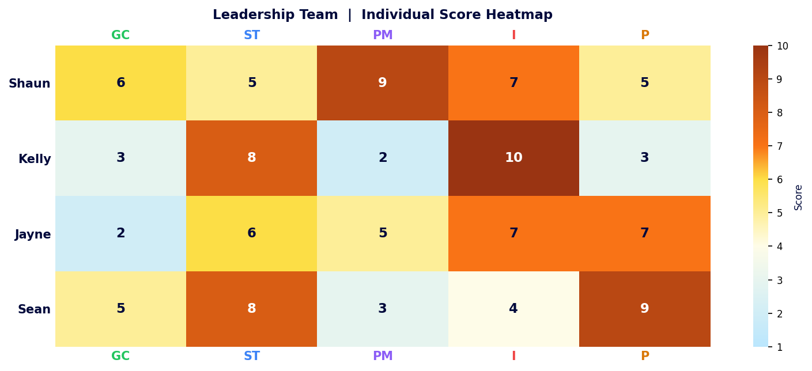
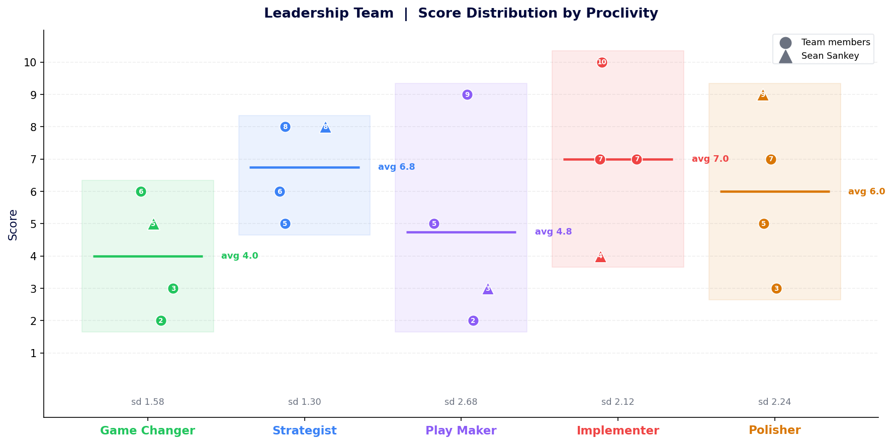
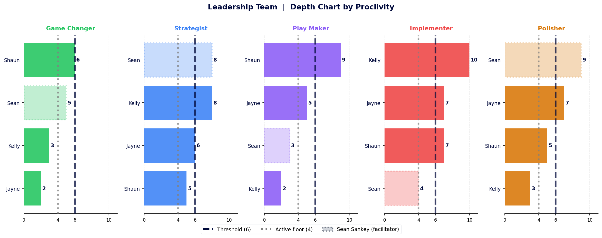
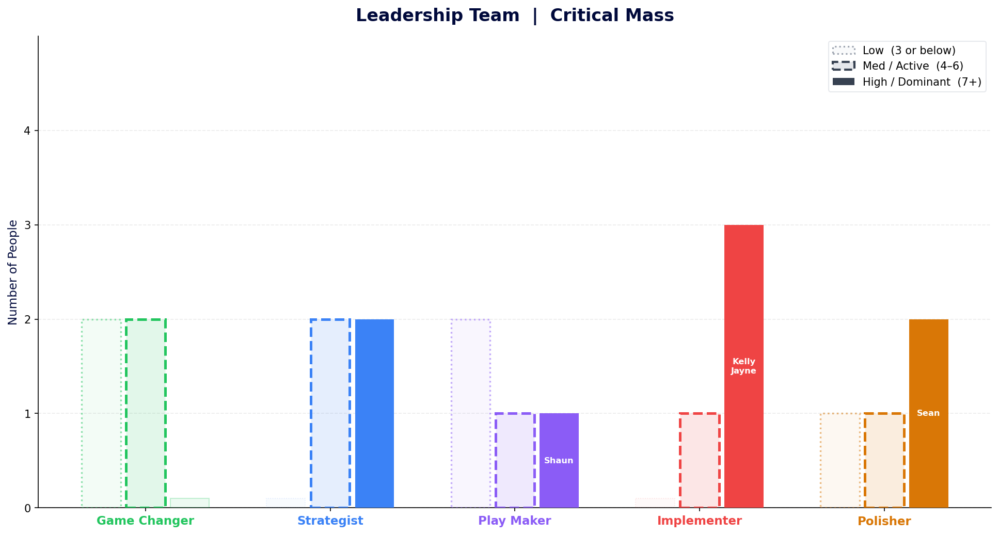

The whole team in one grid
Strong on direction and execution. Worth watching whether the pull toward implementation crowds out space for exploration.

Where the team is aligned and where it splits
You cluster around Strategist. You lead with Implementation. Developing people and driving change deserve a conversation.

Play Maker has the widest spread in the team: Shaun at 9, Jayne at 5, Sean at 3, Kelly at 2. A range of 7 from highest to lowest on a single proclivity is significant in a four-person team. Implementer is the next widest: Kelly at 10 and Sean at 4 – a 6-point gap that shows up in how differently the two approach pace and delivery.
Strategist is the team’s most closely aligned proclivity. There is a consistent amount of energy for “having a plan, looking at risks” etc. However worth noting that it’s nobody’s Dominant energy, and particularly if removing Sean’s score, will always come lower down the pecking order when faced with the urgency and satisfaction of implementation.
Who owns each energy and how thin the bench gets
Moving things on (volume and speed) is where you have the deepest bench.

Strategist and Implementer are the only zones where the entire team clears the Active threshold, and Implementer gets the majority of the leading energy.
Where does critical mass sit?
Strong Implementer critical mass gives this team natural momentum. What needs deliberate attention is what gets added before that momentum kicks in.

Names appear in each column only where that proclivity is the person’s highest energy. Shaun leads with Play Maker (9), Kelly and Jayne lead with Implementer (10 and 7), and Sean leads with Polisher (9). The team’s strongest collective energies are Implementer and Strategist: three people at Dominant on Implementer, two on Strategist – a team that knows where it is going and knows how to get there.
Play Maker and Game Changer show the thinnest bars. Nobody’s highest energy sits in Game Changer, and Play Maker belongs to Shaun alone at Dominant level. The team generates direction and delivers on it well.
Four things the flat average hides
- Shaun’s Play Maker at 9 is the team’s relational engine. He is the natural source of orchestration, stakeholder facilitation and collaborative glue in and around the room. In a team that runs predominantly on direction and delivery, that energy is load-bearing.
- Kelly and Sean share Strategist 8 but run on entirely different fuel. Kelly executes first (I 10, P 3): pace, momentum, get it done. Sean refines first (P 9, I 4): quality instinct, considered pace. They will land in the same place strategically and then experience consistent friction about tempo and standard. That tension is productive when it is named, costly when it is not.
- Three of four people at Implementer 7 or above gives this team exceptional delivery capacity. Shaun, Kelly and Jayne default to action. Sean at 4 is the natural counterweight: less urgency to act, more instinct to pause and check. That tension is a feature, not a flaw, as long as it is held intentionally.
- This team is excellent at executing known plays and maintaining high standards. Game Changer is Active at best for all four: Shaun and Sean at 6 and 5, Kelly at 3, Jayne at 2. On any challenge that requires genuinely new thinking, the answer is people, process or will to resist the pull toward the familiar.
Two columns run hot across most of the team: Strategist and Implementer. Game Changer is a real watchout and Play Maker has the widest distribution. Both worth diving into in terms of implications.